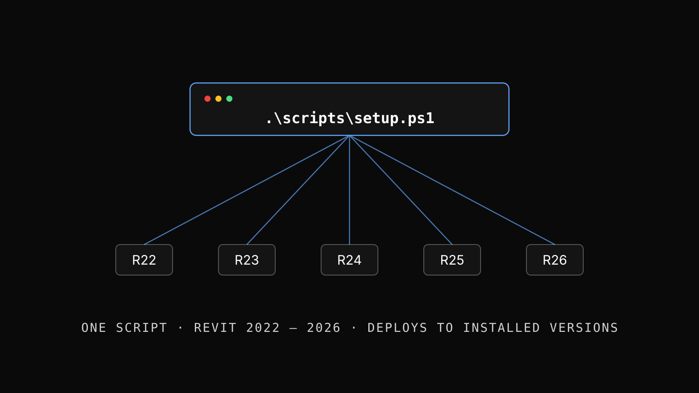
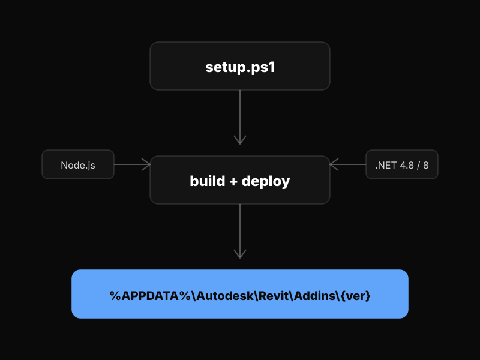
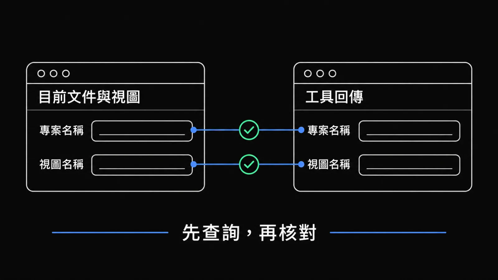

本頁帶你從零裝好 Revit MCP，最後只用兩個查詢工具讀一次目前開啟的專案與作用視圖，不修改模型。
MCP/）與 MCP Server（MCP-Server/）。
| 項目 | 需求 | 檢查 |
|---|---|---|
| OS | Windows 10 或更新版本 | winver |
| Revit | Autodesk Revit 2022、2023、2024、2025、2026 任一 | 查 %ProgramFiles%\Autodesk\Revit ... |
| .NET | Revit 2022–2024 使用 .NET Framework 4.8；Revit 2025–2026 使用 .NET 8 | dotnet --list-sdks |
| Node.js | LTS，建議 20.x 或更新版本（MCP Server 使用） | node --version |
| git | 用來下載專案（沒有的話，先照首次安裝排錯指南安裝） | git --version |
| port 8964 | 未被其他程式佔用（Revit 端 WebSocket 服務預設埠） | netstat -ano | findstr 8964 |
新手建議使用 scripts/setup.ps1。腳本會檢查環境、安裝相依套件、編譯 MCP Server、編譯並部署 Revit Add-in，並協助設定常見 AI Client。

git clone https://github.com/shuotao/REVIT_MCP_study.git
下載完成後進入專案資料夾：cd REVIT_MCP_study。後面的指令都從這個 repo 根目錄執行。
在 repo 根目錄（上一步的 REVIT_MCP_study 資料夾）執行 .\scripts\setup.ps1。AI Agent 或非互動模式可用 powershell -ExecutionPolicy Bypass -File scripts/setup.ps1 -NonInteractive -RevitVersions "2024,2025"。
每個版本輸出 MCP/bin/Release.R{YY}/RevitMCP.dll（組態對照見下方 Build Matrix）。
腳本會協助設定常見 AI Client；各 Client 的設定位置見AI Client 設定。
啟動或重啟 AI Client，讓它載入 MCP Server；Revit 重新啟動後才會載入新部署的 Add-in。
貼指令出現「'&&' 語彙基元不是有效的陳述式分隔符號」的錯誤？看docs/troubleshoot-first-install.md。
想精確控制 build / 部署（例如自動化流程），或想知道哪一步失敗 → 走手動流程。
透過 Plugin Marketplace 安裝可分享的 Skill（例如 hj-pr-proposal），是貢獻流程的一部分，與本頁的 Revit 安裝無關。
步驟與封包內容請看：貢獻模板 · 一鍵安裝提案 Skill。
新 DLL 才能取代舊 DLL。沒關閉 → DLL is locked → 複製失敗。tasklist | findstr Revit 確認。
# 在 repo 根目錄開始執行
cd MCP-Server
npm install
npm run build
cd ..\MCP
dotnet build -c Release.R24 RevitMCP.csproj前三行編譯 MCP Server（AI Client 會啟動 node MCP-Server/build/index.js）；最後一行編譯 Add-in（此時工作目錄是 MCP/），把 R24 換成你要的版本（R22/R23/R24/R25/R26）。輸出在 MCP/bin/Release.R24/RevitMCP.dll。
# 先回到 repo 根目錄（上一步結束時在 MCP/）
cd ..
# 指定 Revit 版本
.\scripts\install-addon.ps1 -Version 2024
# 多版本環境一次部署完
.\scripts\install-addon.ps1 -All腳本會複製建構產物中的全部 DLL（R22–R24 為 13 個、R25–R26 為 8 個，兩者都正確）、部署前檢查建構產物世代是否與目標 Revit 相符、部署後逐檔 SHA256 驗證，並輪替舊版備份。偵測到多版本而未指定時，互動模式會要求你選擇，非互動模式則直接失敗，不會擅自挑選。
啟動 Revit → 載入或建立專案 → 在 ribbon 的 MCP Tools 面板啟動 MCP 服務 → 確認 Revit 顯示 WebSocket server 已監聽 localhost:8964。之後到第一次查詢驗收。
RevitMCP.2024.csproj 或其他版本專用 project；只保留一個 MCP/RevitMCP.csproj.addin 檔；只保留一個 MCP/RevitMCP.addin.addin 內寫死絕對 DLL 路徑，維持相對路徑 RevitMCP\RevitMCP.dll<AddInId>，除非明確要求並協調<DeployAddin>true</DeployAddin>| Config | Target | .NET | ElementId | Output |
|---|---|---|---|---|
Release.R22 | Revit 2022 | Framework 4.8 | int | bin\Release.R22\RevitMCP.dll |
Release.R23 | Revit 2023 | Framework 4.8 | int | bin\Release.R23\RevitMCP.dll |
Release.R24 | Revit 2024 | Framework 4.8 | int | bin\Release.R24\RevitMCP.dll |
Release.R25 | Revit 2025 | .NET 8 | long | bin\Release.R25\RevitMCP.dll |
Release.R26 | Revit 2026 | .NET 8 | long | bin\Release.R26\RevitMCP.dll |
Revit 2025+ 的 ElementId 從 int 改為 long。MCP/Core/RevitCompatibility.cs 提供 GetIdValue() 與 ToElementId() 擴充方法跨版本相容。預處理符號 REVIT2025_OR_GREATER 用於條件編譯。
核心概念相同：使用 node 啟動 MCP-Server/build/index.js。第一次使用前必須在 MCP-Server/ 跑 npm run build。專案內建的 Claude Code / Codex 風格 .mcp.json 如下：
{
"mcpServers": {
"revit-mcp": {
"type": "stdio",
"command": "node",
"args": ["./MCP-Server/build/index.js"],
"env": {}
}
}
}已內建，開箱即用。
範本：MCP-Server/claude_desktop_config.json。
範本：MCP-Server/gemini_mcp_config.json。
已內建；路徑使用 ${workspaceFolder}/MCP-Server/build/index.js。
依 repo 根目錄的 Antigravity_MCP_Complete_Guide.md 操作。
範本中的 <YOUR_PROJECT_PATH> 需替換為本專案的實際路徑。同一時間只有一個 AI Client 能保持連線（獨占鎖，第二個會被 HTTP 409 拒絕）；要換 Client，先在 Revit ribbon 點「切換/釋放連線」。
localhost:8964 → 啟動或重啟 AI Client，讓它載入 MCP Server。請只使用 `get_project_info` 和 `get_active_view` 查詢目前開啟的專案與作用視圖，不要修改模型。請列出工具回傳的專案名稱、視圖名稱與類型；查不到時直接說明。ProjectName（來自 get_project_info；即文件（檔案）名稱，會出現在 Revit 視窗標題列中，不是「專案資訊」對話框裡的 Project Name），以及 Name、ViewType、LevelName（來自 get_active_view）。逐一和你眼前 Revit 視窗標題列的文件名稱、作用視圖名稱與類型核對，內容必須來自工具回傳，不是 AI 憑記憶補的。
進階練習（可選）：確認唯讀查詢通過後，再請 AI 建一面短牆並 undo，確認寫入工具的 Transaction 走完。這會修改模型，請在測試專案進行。